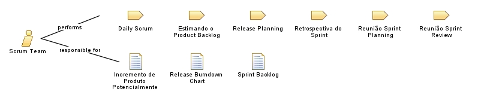

| Role: Scrum Team |
 |
|
 |
||
| Primary Performs | ||
|---|---|---|
| Modifies |
|
|
O Scrum Team:
Membros do Scrum Team não têm nenhum dos papéis tradicionais da engenharia de software, como programador, designer, testador ou arquiteto. Todos no projeto trabalham juntos para finalizar a lista de atividades que eles coletivamente se comprometeram a realizar durante um Sprint. Scrum Teams desenvolvem um profundo espírito de camaradagem e o sentimento de que "estamos juntos nisso". Um Scrum Team típico possui de 5 a 9 pessoas, mas é possível escalar utilizando um "Scrum de Scrums". |
| Assignment Approaches | Membros devem se dedicar em tempo integral, mas pode haver exceções (ex: administrador de banco de dados). Deve-se alterar membros somente no intervalo entre Sprints. |
|---|
Este programa e o material que o acompanha são disponibilizados sob a Copyright © 1998--2008 Mountain Goat Software. Todos os Direitos Reservados. |